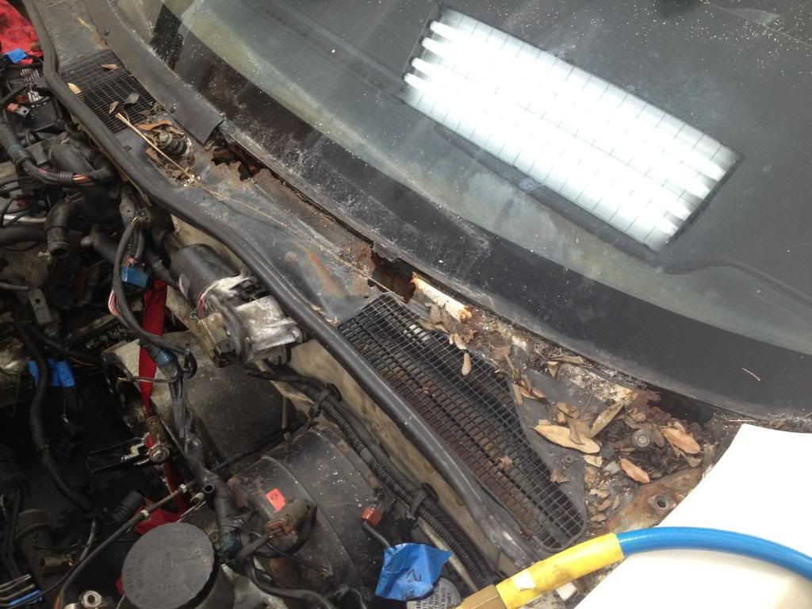
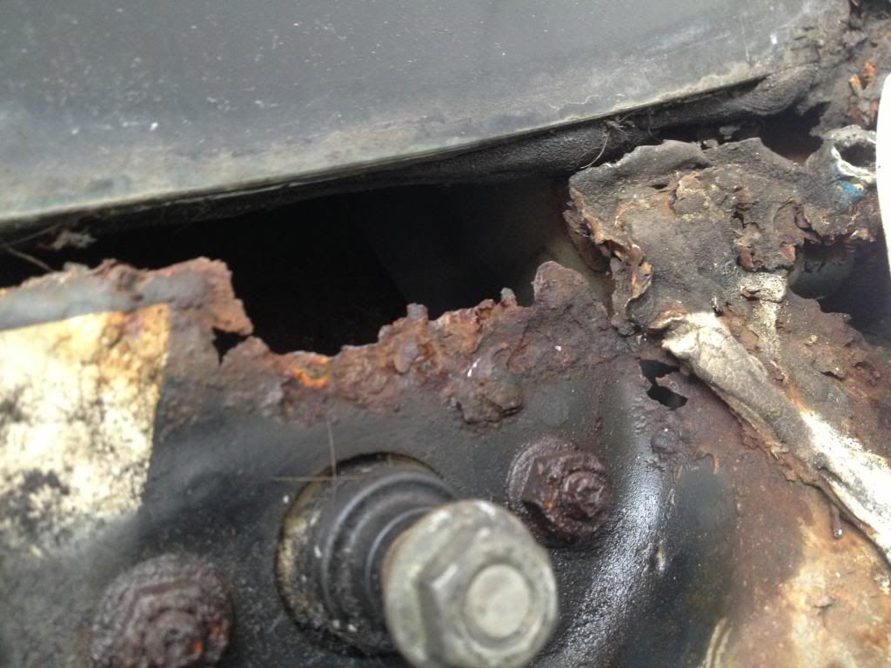

-
Ok…let's try this again:
So I began the restoration project of what I thought was a Shiro in very good shape…and after pulling the motor in preparation for a thorough paint job, I made a gruesome discovery…pretty severe rust in a God-awful location…
I don't know exactly what the area is called…but basically it's the cover for the area where the AC takes in fresh air from the outside…also covers the windshield wiper hinges…
Had it been any other part of the car, simple body work would do the trick…fender, quarter panel, floorboard even could easily be cut from another car and welded on to this one…
but this piece…wow, looks like a real nightmare…spares of common parts for our cars are hard enough to find…I imagine this will be near impossible…
it's tack-welded into place and is extremely thin and intricately shaped so sheet metal replication would be very complicated…
I hate to say that it almost seems like a deal breaker for the restoration as the cost of trying to get this piece alone fabricated might not be worth it....
Has anyone else encountered this and if so, any suggestions?
Thanks in advance




-
yes I had a spots like that on my car. I cut out a section from another car at a junk yard and spliced it into place on mine.
just remember to cut out "all of the rust" or its coming back1984 300ZX - 1988 VG30T Engine, Trans, Diff, ECU
1987 300ZX TURBO - ( Parts Car ), 1988 300ZX TURBO - ( Parts Car )
1972 240Z -- Full restore - L28ET L6 Engine from 280zx, T-5 transmission, Rear diff from the 87
1998 Mazda B-2500, And a lot of bikes -
Yea that car needs a full inspection, the entire interior should be pulled in the hatch area, and it's a good idea to get under the dash with a flashlight to see how much water made it's way into the cabin....
Otherwise, as they said above, cut and splice is the best way, you still have to paint/treat it but you won't be dealing with embedded rust
However I wouldn't worry about the light surface rust on the lower panel, just spray it with krud kutter which will turn the rust into hard black stuff, or any rust converting paint , deal with the exposed panel
And if you do decide to repair portions of it, spend the work according to how clean the rest of the car is, you might do a half-assed job with the repair that will still outlast the rear quarters and other parts of the car, there might be a threshold you don't need to break… and keep in mind, your attachment to the car might change over time, do the work accordingly, a new shell isn't that expensive -
Exactly why I haven't even began fucking with the rust on my car. I figure I can just get another cleaner AE chassis down the road when it starts to get horrible.G-E;338264 wrote: a new shell isn't that expensive
2001 Mazda Miata LS
also a 1989 Nissan 240SX
50th AE Build Thread SOLD 2015 -
thanks for all of the advice fellas…
yes, a new shell isn't expensive, however a good shell is hard to find…and a Shiro nearly impossible
that was my first thought and so I spent last night searching online for one in South Florida and didn't find anything I like…
Other than some spot rust on the tail, The rest of the body is relatively rust free, I checked under the floor mat in the trunk when I bought the car…
for the most part it really is in good shape which is why I was so surprised when I saw the extent of this rust
-
Yeah you had the same problem as me. I took an angle grinder and took out all the rust then just bought thin sheet metal and cutted and frabricated the shape of it and welded it on there. It actually looks good and decent! Plus it saved rain from falling into the passenger floor. It sucked cuz I live in FL and its rain season so I needed to fix ASAP. Btw that piece is called a cowl panel top. Nissan stopped making it. But MSA can special order it but it cost over 200 bucks. You can also find it at car-parts.com. I went the easy route and just got sheet metal from Home Depot and just went to town!http://z31performance.com/showthread…-s-first-build
-
I will post some pics when I get off work. Don't give up man! It's not hard just takes some timehttp://z31performance.com/showthread…-s-first-build
-
Is the piece in good shape on the red Z ? BTW…nice grass.
Here's one on ebay. Ask the seller for a pic.
http://www.ebay.com/itm/NISSAN-66000…ht_1125wt_1001Shiro #443

-
Thats to expensive MSA got it for 291. Special order or he can go to car-parts.com and order one for like 80.00 usedRick88ss;338349 wrote: Is the piece in good shape on the red Z ? BTW…nice grass.
Here's one on ebay. Ask the seller for a pic.
http://www.ebay.com/itm/NISSAN-66000…ht_1125wt_1001
http://www.thezstore.com/page/TZS/PROD/SBC1A07/30-7143http://z31performance.com/showthread…-s-first-build
-
Excellent info Magic, thanks a bunch…all is not lost!
Thanks Rick and AZ
Swing by Rick…I'll show you the grass
-
No problem man I'm new to the Z family so what ever knowledge we know we gotta help each other out and share it!boosted300;338413 wrote: Excellent info Magic, thanks a bunch…all is not lost!
Thanks Rick and AZ
Swing by Rick…I'll show you the grass
 http://z31performance.com/showthread…-s-first-build
http://z31performance.com/showthread…-s-first-build
-
Oh btw all my rubber seals right under the windshield and above the panel were all rotten and rusted out as well. So I just removed it all and once I welded on the sheet metal to the panel I used black silicone and that did the trick. And remember to drill the holes on the right spot to mount the windshield Frame back on. I was a little off so my frames don't even attach together lmao. Oh well.http://z31performance.com/showthread…-s-first-build
-
South Florida explains exactly why your car is rusted out there. I've seen about 10+ Z31s in the Daytona Beach LKQ (I realize far from south, but example…) with rust exactly like that. Cars look perfect until you start peeling window trim off them, then they're pretty much GONE. My brother bought a foxbody from south florida that was exactly the same way.
The salt from the ocean gets in the air..and destroys the cars where you cant see it.- VG30DET (HE341) 86 300ZX - 1982 280ZX Turbo - Headered NA 1986 300ZX 2+2 - 2000 Xterra - -
After having fixed and restored cars in FL for the past 12 years, this is the first that I have heard of that problem.Originally posted by adamvann3 -
yeah its crazy but if you look up cowl panel rust on google for 300zx theres a lot of stories on them and also of 280zx as well. A lot of sports cars in the 70s and 80s in general have that problem. thats why after 90s and up they made the cowl panels out of plastic and removable so its easy to take off and easy to reach the cabin air filter box.http://z31performance.com/showthread…-s-first-build

Copyright © 2006–. All rights reserved. Privacy Policy